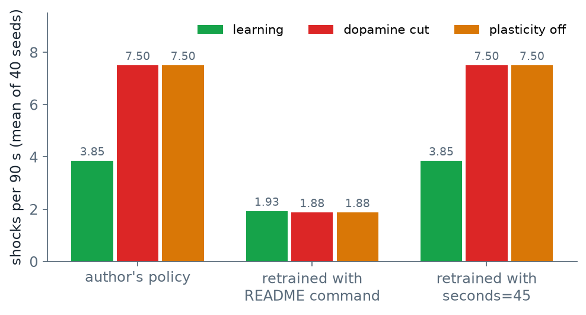

1三種「對上」
先說這一頁在對什麼。fly-blackjack 是一個人（本頁叫他作者）放在 GitHub 上公開的一包程式（repo：那個公開的程式資料夾；README：資料夾裡作者寫的說明與結果摘要），它拿果蠅腦的接線資料去學玩遊戲（是什麼、怎麼學，見 PART 1）。本頁把那包程式在自己的電腦上（本機）重跑一次，分五步，每一步把跑出來的數字對回作者寫的數字。
重現的每一步都要先回答：本機的數字要和作者的差多少以內，才算對上？答案取決於那一步有沒有隨機性、隨機性有沒有被固定住。重現型的專題一律用三種判定標準：
| 判定標準 | 什麼時候用 | 本頁哪些步驟（BJ1 到 BJ5 是下面五個步驟的代號，本課自己編的） |
|---|---|---|
| 逐位相同：檔案一個位元都不差；數字則到作者給出的位數為止每一位都相同 | 這一步沒有隨機性，或隨機性由亂數種子完全固定（種子 seed 是給電腦隨機數產生器的起點；起點相同，抽出來的整串隨機數就相同，所以「隨機」的過程也能重做得一模一樣） | BJ2、BJ3、BJ4 用作者附的訓練好的參數檔那一半（第 6 節）；比到 README 寫出的位數（README 寫 −1.30，本機算出 −1.301，算相同） |
| 在誤差範圍內：與作者的值相差不超過一個事先訂好的比例 | 這一步的隨機輸入在不同電腦上不保證相同 | 本課沒有用到：fly-blackjack 的每個實驗都固定了種子 |
| 形狀相同：條件之間的高低順序與差距方向一樣 | 數字本來就不會一樣，或作者只給了取整的數字 | BJ1 與 BJ4 的重新訓練（事先訂）、BJ5 的勝率 |
兩類步驟事先訂得寬一些。需要重新訓練讀出的步驟：讀出是接在腦迴路後面、把迴路的活動翻成按鍵或動作的一小組參數（BJ1 是 243 個數）；CEM 是作者訓練它的方法，一代抽幾十組參數、各玩幾局、留分數高的幾組再抽下一代，跑幾十代（PART 1 第 5 節）。訓練要跑幾萬局遊戲、牽涉大量浮點運算與好幾個套件，事先不敢保證另一台電腦會算出一模一樣的數字；要訂「誤差範圍內」又沒有依據說該訂幾個百分比，所以退到只比方向，要求形狀相同——完整模型明顯好過對照組。實跑結果比標準好：CEM 的種子是寫死在程式裡的，BJ1 的重新訓練、以及 BJ4 用作者實際參數重新訓練的那一組（第 6 節的 C 組），數字都與作者逐位相同；BJ4 照 README 指令重新訓練的那一組（第 6 節的 B 組）對不上，是因為訓練參數不同，不是隨機性。21 點的勝率（BJ5）：作者只在程式註解裡給了取整數的百分比，所以比的是「完整模型升到作者寫的水準、對照組不動」，也屬形狀相同；一致率（模型在基本策略表 260 格裡選對幾格的比例，第 7 節）README 只給整數的 52%，事先訂比到整數位。各節表格裡的「連結體 ＋ 多巴胺」「連結體 ＋ 可塑性」「學習」都是同一個完整模型，只是各實驗的列名不同，本頁文字一律叫它完整模型。
骰子是說明用的例子，不是實驗數字。
2結論：五個步驟的成績
| 步驟 | 做什麼 | 判定標準 | 結果 |
|---|---|---|---|
| BJ1 | Dino（一個躲障礙的跑酷小遊戲，角色一直往前跑，靠跳或蹲躲開障礙物）：訓練讀出，再跑 50 個訓練時沒用過的關卡（保留關卡） | 事先訂形狀相同（訓練組明顯高於三個對照） | 四列數字與 README 逐位相同，超過標準 |
| BJ2 | 下載資料、切出蕈狀體（果蠅腦裡負責學氣味好壞的一小塊，第 4 節），跑兩次、比 md5（檔案指紋，內容一樣指紋才一樣） | 細胞數、連結數與 README 相同；兩次 md5 相同 | 細胞數相同、md5 相同；README 寫的兩個連結數與作者 repo 裡的檔案不一致（文件錯誤，不影響結果） |
| BJ3 | 制約學習與 T-maze（讓模擬果蠅在兩種氣味之間選邊的測驗，第 5 節） | 與 README 的表逐位相同 | 學習指數五列相同；T-maze 位移兩列相同；三個對照組的位移本機 +0.03、README +0.00，對不上（README 的值查不到來源，不影響結論，見第 5 節） |
| BJ4 | 覓食 | 作者的策略：逐位相同；重新訓練：形狀相同 | 作者的策略逐位相同；照 README 重新訓練形狀不同；改用作者策略檔記錄的參數重新訓練，逐位相同（已找到原因） |
| BJ5 | 21 點 30,000 手 | 勝率（作者的用詞，指每手平均輸贏，見第 7 節）形狀相同：完整模型升到約 −16%、對照組不動；與基本策略（一張公開的「每種牌面該怎麼打」的表，PART 1 第 5 節）一致約 52%，比到整數位 | 勝率形狀相同（完整模型 −14.8%，對照組都在 −47% 左右不動）；一致率對不上（45.3%），作者的三份資料彼此也不一致 |
每一列的數字出處見下面對應的小節。表裡四處對不上：BJ2、BJ3 的兩處是作者文件的錯，不影響任何結果；BJ4、BJ5 的兩處才影響結果，副標題說的「兩處」是這兩處。
BJ1–BJ5 是本課自己編的代號。下載包是 PART 2 教你抓下來的本課程式資料夾，裡面的 blackjack/run_all.sh 照這個順序執行，每一步的終端輸出存在 logs/、數字存在 results/；本課自己實跑的那一份 logs 與 results 收在課程網站程式倉庫的 out/ 資料夾，本頁寫「出自 out/…」指的都是它，給想核對的人用。作者的 repo 用的是 python -m flybrain.… 指令，其中覓食與 21 點兩個實驗沒有命令列入口（沒有一條可以直接在終端機打的指令；作者是在 Python 裡呼叫函式、或用他的網頁版跑的），下載包的 blackjack/scripts/ 補了兩支小程式去呼叫作者的函式（不改作者的程式）。
3BJ1 Dino：四列全部相同
BJ1 驗的是 PART 1 第 5 節的 Dino 整條鏈：切出 80 顆神經元、訓練 243 個參數的讀出、再拿到 50 個訓練時沒用過的關卡（保留關卡）上打，四種控制方式的成績要與 README 的表相同。那 80 顆不是 BJ2 的蕈狀體，是作者從同一份連結體（果蠅腦的接線資料表，第 4 節）另外挑的一小組：32 顆收遊戲畫面的視覺神經元、32 顆中間神經元、16 顆往身體送指令的下行神經元，預先附在 repo 裡；Dino 用它，蕈狀體那幾千顆要到 BJ2 才切。表的三欄：完成關卡是撐完整關、沒撞上障礙的關卡數；存活秒數是撞上之前撐了幾秒；分數是跑過的距離換算。
| 控制方式 | 完成關卡（50 個保留關卡） | 平均存活秒數 | 平均分數 |
|---|---|---|---|
| 連結體 ＋ 訓練過的讀出 | 45 | 29.12 | 210.7 |
| 同一個讀出，迴路輸出換成 0 | 0 | 3.48 | 18.7 |
| 沒訓練的讀出 | 0 | 2.26 | 11.8 |
| 隨機按鍵 | 0 | 2.43 | 12.7 |
本機與 README 第 42–47 行逐位相同。本機輸出在 out/blackjack/logs/bj1_train.log；前兩列用的讀出參數是 out/blackjack/bj1_checkpoint.json 裡的那 243 個——本機自己訓練出來的，不是作者附的；因為 CEM 的亂數種子寫死在程式裡，本機訓練出的 243 個數和作者的一樣，成績才會逐位相同。第三列「沒訓練的讀出」是用另一個寫死的種子隨機抽的一組 243 個，所以也能重現。
四列怎麼讀：第一列是完整模型。第二列是作者在 README 特別強調的對照：讀出一模一樣，只是把迴路送給它的活動換成 0。這一列完成 0 關，代表讀出確實在用迴路算出來的東西，而不是自己背下了關卡。第三、四列是兩條底線——讀出沒訓練過、或根本不看畫面亂按——告訴我們「分數多少等於什麼都沒學」。作者也明說這個示範不能證明果蠅的接線比同樣大小的隨機網路好——要證明那件事，需要用打亂接線的網路以同樣的訓練量再比一次。
gen 0 train 45.1 val 164.5 best 164.5 gen 1 train 70.4 val 164.5 best 164.5 gen 2 train 83.2 val 164.5 best 164.5 ... gen 37 train 217.7 val 217.7 best 217.7 gen 38 train 217.7 val 214.5 best 217.7 gen 39 train 217.7 val 217.7 best 217.7 trained in 98.1s, validation 217.7 -> ../results/bj1_checkpoint.json controller survived/50 mean seconds mean score -------------------------------------------------------------------------- connectome + trained readout 45 29.12 210.7 SAME readout, circuit silenced 0 3.48 18.7 untrained readout 0 2.26 11.8 uniform random actions 0 2.43 12.7
4BJ2 切出蕈狀體：md5 相同，README 的兩個連結數對不上
先認識這一步的材料。連結體是整隻果蠅腦「哪顆神經元接到哪顆、幾個突觸」的完整表格；蕈狀體是其中負責學「這個氣味是好是壞」的一小塊，模型從它切出四群神經元：氣味輸入 PN → 把氣味編成代碼的 KC → 輸出 MBON，加上告訴它賞或罰的多巴胺神經元 DAN（PART 1 第 2 節）。BJ2 驗的是「切出蕈狀體」這一步能不能一模一樣地重做。作者的 flybrain.mb.fetch 從 connectome_data_prep（另一位研究者 Yijie Yin 在 GitHub 上公開的整理版，把 MaleCNS（一份公開的雄果蠅全腦連結體資料集的名字）連結體存成可以直接讀的表格）下載連結矩陣（哪顆神經元連到哪顆、幾個突觸），下載完核對檔案大小與筆數（PART 2 第 5 節）；flybrain.mb.extract 從裡面切出 PART 1 第 2 節表裡的四群神經元（PN、KC、MBON、DAN），存成一個檔 data/mb_circuit.npz。README 宣稱這個切法在任何電腦上都逐位相同（同一支程式跑兩次應得到相同的 md5），但作者沒有附上他自己算出的 md5 值。所以能驗的是兩層：第一層照作者說的跑兩次、比兩次是否相同；第二層把切出來的細胞數與連結數對回作者存進 repo 的紀錄檔。比檔案不必逐條比對幾萬條連結，比 md5 就夠了：md5 是從整個檔案算出來的一串指紋，內容只要差一個位元，指紋就完全不同。本課跑兩次、比兩次的 md5：
32dc49359f237250162ed33dcb5da93c data/mb_circuit.npz
32dc49359f237250162ed33dcb5da93c data/mb_circuit.npz兩次相同（第一層過）。這只證明同一台電腦兩次一樣；跨電腦的證據在下一張表。輸出在 out/blackjack/logs/bj2_md5.txt。
再把切出來的細胞數與連結數對回作者的說法。下表三欄：README 寫的數字；作者執行程式後存進 repo 的紀錄檔 data/mb_manifest.json（程式切完會把細胞數與連結數記在這裡）；本機切出來的。
| 項目 | README | 作者 repo 裡的 data/mb_manifest.json | 本機 |
|---|---|---|---|
| 細胞數 PN／KC／MBON／DAN | 682／1,200／97／332 | 682／1,200／97／332 | 682／1,200／97／332 |
| PN→KC 連結 | 22,586 | 7,182 | 7,182 |
| KC→MBON 連結 | 61,210 | 18,183 | 18,183 |
| DAN→MBON 連結 | 3,123 | 3,123 | 3,123 |
| MBON 趨近／迴避（作者把 97 顆 MBON 依主要收到哪一群多巴胺分成兩類：56 顆讓果蠅想靠近、41 顆讓它想躲，第 5 節好惡值的正負就是這樣來的） | 56／41 | 56／41 | 56／41 |
作者的 manifest 收在 out/upstream/blackjack_mb_manifest_committed.json，本機的在 out/blackjack/logs/bj2_extract_run1.log。
本機與作者 commit 進 repo 的 manifest 完全相同，所以切法確實可重現。對不上的只有 README 的兩個連結數。作者的程式先只留「同時接到 PN、又連到 MBON」的 KC（路徑上的 KC，共 3,811 顆），再依每顆「收到 PN 的突觸數加送到 MBON 的突觸數」排名、等距取 1,200 顆（依排名每隔大約三顆取一顆，取到 1,200 顆；PART 1 表裡的 1,200 就是這樣來的）。本課猜 README 寫的也許是不取樣、用全部 3,811 顆時的數字，就用全部 KC 切了一次（PART 4 的 X3 存下的）：22,581 條 PN→KC、57,823 條 KC→MBON。如果 README 真的是全部 KC 的數字，兩個數都該吻合；結果前者只差 5 條（22,581 對 22,586）、後者差了三千多條（57,823 對 61,210），一中一不中，所以這個猜測不成立；README 那兩個數字怎麼來的，從程式裡對不出來。它們不影響任何實驗結果——實驗讀的是 mb_circuit.npz，而那個檔案逐位相同。
ok synapses 121,933,227 ok kenyon_cells 4,064 ok mbons 97 ok pam 316 ok ppl1 16 ok projection_neurons 682
5BJ3 制約學習：學習指數相同
BJ3 驗的是 PART 1 第 4 節的學習規則在作者的設定下，算出來的學習指數是否與 README 相同。做法照 PART 1 第 5 節的實驗二：隨機挑兩種氣味 A、B，各活化一組不同的 KC；A 出現時同時「電擊」——讓懲罰群多巴胺神經元（PPL1）放出多巴胺——B 出現時不電；重複 20 次。換 12 個亂數種子（每個種子抽到的氣味與隨機數不同）各做一遍，取平均。
兩個指數。好惡值是蕈狀體對一種氣味輸出的一個數，正代表想靠近、負代表想躲；學習就是靠多巴胺把這個數改掉（PART 1 第 3 節）。學習指數＝ A 的好惡值改變量 − B 的改變量，愈負代表愈怕 A，模型完全沒變就是 0。T-maze 位移＝訓練後的偏好指數 − 訓練前的；偏好指數是讓 100 隻模擬果蠅在 A、B 之間選邊：這 100 隻用的是同一個蕈狀體，每一隻選 A 的機率由「A 的好惡值減 B 的好惡值」決定（差愈大機率愈偏，差 0 時各半），再各抽一次；(選 B 的隻數 − 選 A 的隻數) ÷ 100，全部選 B 是 +1，各選一半是 0。
五個條件：連結體＋可塑性是完整模型；關掉可塑性把學習率設 0（可塑性：連結強度會不會被多巴胺改變；學習率：每次改多少，設 0 就是每次改變量為 0）；切斷多巴胺把 DAN→MBON 的連結全部設 0，多巴胺送不到 MBON；氣味與電擊不同時出現照樣電擊，但只在 A 不在場時電；KC→MBON 打亂把這層連結隨機重排（PART 4 的 X2、X3 會再談它為什麼還能學）。前三個對照照理都該學不到東西：
| 條件 | 學習指數（README） | 本機 | T-maze 位移（README） | 本機 |
|---|---|---|---|---|
| 連結體 ＋ 可塑性 | −1.30 | −1.301 | +0.80 | +0.800 |
| 關掉可塑性 | 0.00 | 0.000 | +0.00 | +0.030 |
| 切斷多巴胺 | 0.00 | 0.000 | +0.00 | +0.030 |
| 氣味與電擊不同時出現 | 0.00 | 0.000 | +0.00 | +0.030 |
| KC→MBON 打亂 | −1.23 | −1.232 | +0.83 | +0.825 |
本機輸出在 out/blackjack/logs/bj3_experiment.log、bj3_tmaze.log。
學習指數五列全部相同（比到 README 的兩位小數）。T-maze 位移兩列相同、三列對不上：三個對照組的學習指數是 0（模型完全沒變），但本機的位移是 +0.03 而不是 README 的 +0.00。原因在 T-maze 的做法：每次讓 100 隻模擬果蠅依機率選邊，訓練前、訓練後各抽一次，兩次抽到的隨機數不同，所以模型沒變、位移也不會剛好是 0。三個對照組的值一模一樣，是因為它們的模型都沒變、又用同一串亂數抽選擇，抽出來的 100 個選擇自然相同。本機的 +0.03 是作者的程式照原樣跑出來的；README 的 +0.00 怎麼得到，程式裡查不到。這一格的判定是「對不上、原因在 README」：它不影響結論，因為 +0.03 是兩次抽樣的差，不是學習。訓練前的偏好指數本機 +0.147、README +0.15，訓練後 +0.947、README +0.95，兩者相同。
ACQUISITION (12 seeds, 20 trials, learning index = change in punished odour minus change in unpaired odour) condition index sd vs control ---------------------------------------------------------------- connectome + plasticity -1.301 0.324 -- plasticity off 0.000 0.000 -4.0 sd dopamine disconnected 0.000 0.000 -4.0 sd KC->MBON shuffled -1.232 0.437 -0.2 sd unpaired odour and shock 0.000 0.000 -4.0 sd condition naive PI trained PI shift ---------------------------------------------------------------- connectome + plasticity 0.147 0.947 0.800 plasticity off 0.147 0.177 0.030 dopamine disconnected 0.147 0.177 0.030 KC->MBON shuffled 0.107 0.932 0.825 unpaired odour and shock 0.147 0.177 0.030
6BJ4 覓食：README 少寫了一個參數
覓食是 PART 1 第 5 節的實驗三：果蠅在場地裡走，兩個氣味源一個有食物、一個會電擊，蕈狀體在這一場裡自己學哪個危險。它分兩段：控制移動的讀出先用 CEM 訓練好——這個讀出的輸入是 8 個數（腳下氣味多濃、左右觸角哪邊濃、最近的氣味源在哪個方向、自己的速度，以及蕈狀體給的好惡值），輸出是下一步怎麼走；作者把訓練好的參數存在 policies/forage.json（本頁叫它策略檔）；再用這組參數讓果蠅跑 40 場、每場 90 秒（40 個種子＝ 40 種不同的起始位置與氣味源位置），算平均每場被電擊幾次。被電得愈少，代表愈快學會躲開電擊那個氣味；另外也記每場吃到幾次食物，看它有沒有在找氣味源。三個條件取自 BJ3 五個條件中的三個：學習（完整模型）、切斷多巴胺、關掉可塑性。
判定分兩層：拿作者附的策略檔直接跑，要逐位相同；自己重新訓練讀出，事先只要求形狀相同——學習組被電的次數明顯少於兩個對照組（理由見第 1 節）。

scripts/make_figures.py 從 out/blackjack/bj4_forage.json 與 bj4b_forage_s45_eval.json 畫出。A 組：學習組每場被電 3.85 次、切斷多巴胺與關掉可塑性都是 7.50 次，吃到食物 5.475／5.25／5.25 次，與 README 逐位相同，第一層過了（兩個對照組數字一模一樣，是因為多巴胺送不到和學習率為 0 對模型的效果相同——連結都不會變——又用同一串亂數）。B 組的問題不只是數字不同：學習組被電 1.93 次、切斷多巴胺 1.88 次，學習沒有帶來任何好處，形狀就不對了。再看食物就知道為什麼：B 組每場只吃到約 1.3 次（1.275／1.25／1.25；作者約 5.5 次），也就是這個重新訓練出來的讀出幾乎不去找氣味源；果蠅不靠近氣味源，就不會被電、也不會吃到食物，蕈狀體學到什麼都派不上用場。問題出在讀出訓練，不在蕈狀體。
原因寫在作者自己的策略檔裡。policies/forage.json 除了訓練好的參數，還記錄了訓練時的設定。seed 是訓練用的亂數種子。seconds 是訓練時每一回合（一場）跑多久；訓練時每場 45 秒、測試時每場 90 秒，兩者本來就不同。validation 是訓練結束時在 3 個驗證場地的平均分數：吃到食物加分、被電扣分、閒著不動也每秒扣分：
{
"task": "forage",
"seed": 20260913,
"seconds": 45.0,
"validation": 2942.240450387357
}策略檔裡除了參數本身以外的欄位，收在 out/upstream/blackjack_forage_policy_meta.json。
作者訓練時每一回合是 45 秒；而 README 第 308 行教讀者打的指令 train(generations=32) 沒有指定這個參數，程式就用內建的預設值 40 秒。回合短 5 秒，訓練出來的讀出就不一樣——CEM 挑的是在那個回合長度下分數最高的參數，回合長度變了，被挑中的參數也變了；為什麼只差 5 秒就挑出一個幾乎不去找氣味源的讀出，本課沒有追。把指令改成 train(generations=32, seconds=45.0) 重新訓練：訓練的驗證分數是 2942.24，和策略檔記錄的值一樣；三個條件的電擊與食物數也都與作者逐位相同（C 組）。
seconds=45.0。下載包的 blackjack/scripts/bj4b_forage_s45.py 補上這個參數，重新訓練的結果與作者附的策略逐位相同。bj4_forage.py 保留照 README 原樣的訓練，作為對照。# 照 README 的指令重新訓練（每回合預設 40 秒） gen 29 train 1471.2 val 364.9 best 531.8 gen 30 train 702.5 val 364.0 best 531.8 gen 31 train 1715.6 val 364.5 best 531.8 retrained learning shocks 1.93 food 1.27 retrained dopamine cut shocks 1.88 food 1.25 retrained plasticity off shocks 1.88 food 1.25 # 補上 seconds=45.0 重新訓練 gen 29 train 4206.3 val 2021.1 best 2942.2 gen 30 train 4206.9 val 1436.9 best 2942.2 gen 31 train 2441.1 val 1850.2 best 2942.2 s45 learning shocks 3.85 food 5.47 s45 dopamine cut shocks 7.50 food 5.25 s45 plasticity off shocks 7.50 food 5.25
7BJ5 21 點：勝率對上，學到的策略對不上
21 點是 PART 1 第 5 節的實驗四。模型怎麼打：每一手，把「自己的點數、手裡的 A 算不算 11 點（軟手）、莊家的明牌（莊家翻開的那張）」連同候選的動作一起編成一組像氣味一樣的 KC 活化——同一手牌配「要牌」（再拿一張）「停牌」（不拿了）「加倍」（加一注、只再拿一張）是三種不同的「氣味」，所以每個動作各有一個好惡值——選最高的；一手結束，贏了給獎賞多巴胺、輸了給懲罰多巴胺，這一手做過的每個決定都依 PART 1 第 4 節的學習規則更新連結。作者在 flybrain/mb/blackjack.py 的檔尾用註解寫了實驗設定：3 個種子、每個 30,000 手、對照組先跑。四個條件：未訓練（不學、不探索）、關掉學習、切斷多巴胺、連結體 ＋ 多巴胺（完整模型），各打 3 個種子；表在下面。勝率在這裡指平均每手的淨輸贏（以一注為單位、寫成百分比：−15% 就是平均每手輸 0.15 注），取最後 2,000 手。表裡列名的「探索」是模型每一手有一定比例不看好惡值、隨機亂選動作，這個比例從 35% 隨手數遞減到 3%。兩個對照組也照同樣的時程把亂選比例降下來，但它們的曲線沒有往上走：三個種子平均從第一個 2,000 手的 −42.7% 掉到最後的 −47.5%，掉了約 5 個百分點。掉的原因是亂選（−44.5%）其實比照沒學過的好惡值選（未訓練那組的 −48.0%）略好一點，亂選變少，成績就往下靠向未訓練的水準。所以「不動」指的是沒有上升、沒有離開「什麼都沒學」那一帶；而有多巴胺那組往上走了 10 個百分點，方向相反，這個上升不可能是亂選變少造成的。

scripts/make_figures.py 從 out/blackjack/bj5_blackjack_30000.json 畫出。| 條件 | 作者的勝率（開始 → 最後 2,000 手） | 本機（3 種子） | 平均 |
|---|---|---|---|
| 未訓練 | −45% | −44.8%／−46.9%／−52.3% | −48.0% |
| 關掉學習（探索照常遞減） | −45% → −45% | −43.9%／−47.0%／−51.5% | −47.5% |
| 切斷多巴胺（探索照常遞減） | −46% → −47% | −43.9%／−47.0%／−51.5% | −47.5% |
| 連結體 ＋ 多巴胺 | −45% → −16% | −15.0%／−16.4%／−12.9% | −14.8% |
上表本機欄只列最後 2,000 手；本機的「開始」值在頁尾的終端機輸出（winrate 箭頭前面那個數）。兩個「開始」量的不是同一個時間點：作者寫的 −45% 是還沒學之前的水準（和未訓練那列一樣）；本機的「開始」是打完頭 2,000 手的平均，而學習從第 1 手就開始，這 2,000 手已經在學，所以是 −26% 上下。本課不拿兩個「開始」互比，判定比的是最後的水準與形狀。作者的值出自 blackjack.py 檔尾註解（收在 out/upstream/blackjack_py_RESULT_comment.txt）；本機在 out/blackjack/bj5_blackjack_30000.json。「關掉學習」與「切斷多巴胺」三個種子的數字一模一樣，原因和 BJ4 相同：多巴胺送不到 MBON 時連結一樣不會變，兩種對照對模型的效果相同，又用同一串亂數抽牌與抽探索，打出來的每一手都一樣。本機三個種子彼此差到 7 個百分點，表示單一種子的勝率本來就有這麼大的浮動，所以這一步比的是三種子平均與形狀，不是逐位。
勝率的改善重現了，而且只出現在有多巴胺的那一組。不過圖 2 也看得出，學會的那條只爬到「永遠停牌」參考線附近——成績和一個永遠不要牌的玩家差不多。所以作者接著宣稱的「它學到什麼策略」才重要：看模型在基本策略表的 260 格裡每一格選的動作有幾格與表相同，就是一致率（表的定義見 PART 1 第 5 節）。作者還附了一個訓練完的蕈狀體狀態檔 data/brain_seed.json（下面叫它大腦檔）。這一部分，作者自己留下的三份資料就互相矛盾：
| 來源 | 與基本策略一致 | 260 格裡的選擇 |
|---|---|---|
| README | 52% | 幾乎都停牌，只在 10、11 點要牌 |
blackjack.py 檔尾註解 | 48.1% | 停牌約 227 格、加倍 0 格 |
作者附的大腦檔 data/brain_seed.json（檔內記錄，由作者網頁版的 JavaScript 評分程式算出；檔內標明來自「Python 30,000 手、種子 0」） | 53.1% | — |
| 同一個大腦檔，載入作者的 Python 模型重新評分 | 51.9% | 要牌 97、停牌 149、加倍 14 |
| 本機重跑（同樣用種子 0） | 43.8% | 要牌 6、停牌 214、加倍 40 |
大腦檔的評分由 blackjack/scripts/bj5b_author_brain.py 算出（out/blackjack/bj5b_author_brain.json）；本機三個種子的平均一致率是 45.3%。還有一件事：沒學過的蕈狀體一致率就已經 45%（幾乎每格要牌，剛好對中表上該要牌的那些格），學完三個種子平均仍是 45.3%，一致率幾乎沒有因為學習而上升（頁尾輸出裡完整模型三個種子的 agree 從 0.41、0.39、0.47 升到 0.44、0.45、0.47，起點比未訓練的 45% 低，是因為頭 2,000 手還有三成多的動作是亂選的；比較基準是「未訓練 45%」對「學完 45.3%」，不是每行自己的起點）；所以 45% 到 53% 之間的差異能不能代表「學到策略」，本身就存疑，這比「對不上 52%」更重要。
先說表裡作者大腦檔的兩個值：同一個大腦檔，檔內記錄 53.1%（138 格）是作者網頁版自己算的，載入 Python 重算是 51.9%（135 格），兩套評分程式對同一份連結強度算出的格數差 3 格，原因本課沒有追。作者附的大腦一致率約 52%，和 README 相符，但它要牌 97 格，既不是 README 說的「幾乎都停牌」，也不是程式註解說的「停牌約 227 格」；大腦檔標明是種子 0，本機用同一份程式、同一個種子重跑，又是另一套結果。勝率能重現、策略卻不同，並不矛盾：學會的勝率只到「永遠停牌」那條線，很多張不同的 260 格表都能打出差不多的勝率，勝率對上不代表每一格的選擇相同。所以這一步的結論要分開講：「有多巴胺才會變好」可以重現；「學到什麼策略、一致率多少」從公開的程式碼重現不出來。最直接的解釋是附的大腦檔由另一個版本或另一組設定的程式產生，但作者沒有記錄，本課無法確認。PART 5 把種子 0 這 30,000 手錄成影片，可以親眼看它從「幾乎每格都要牌」變成「幾乎每格都停牌」。
untrained greedy seed 0 winrate -0.447 -> -0.448 agree 0.450 -> 0.450 ...
no learning + exploration decay seed 0 winrate -0.393 -> -0.439 agree 0.450 -> 0.450 ...
dopamine cut + exploration decay seed 0 winrate -0.393 -> -0.439 agree 0.450 -> 0.450 ...
connectome + dopamine seed 0 winrate -0.259 -> -0.150 agree 0.412 -> 0.438 ...
connectome + dopamine seed 1 winrate -0.244 -> -0.164 agree 0.392 -> 0.446 ...
connectome + dopamine seed 2 winrate -0.238 -> -0.129 agree 0.465 -> 0.473 ...
reference {'basic strategy': -0.013925, 'random': -0.44475, 'always stand': -0.15835}